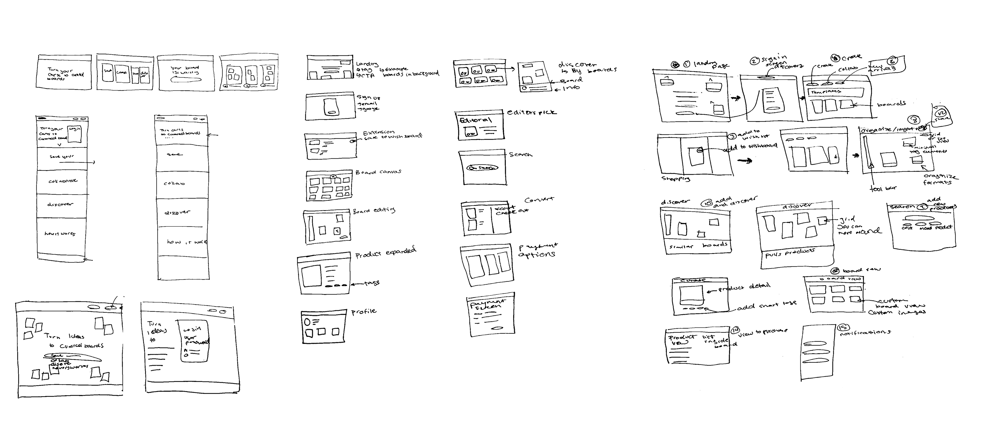

Stash It
One home for scattered style inspiration
Stash It is a platform for tracking style inspiration by connecting screenshots, carts, and social feeds into a single, structured space.
Instead of leaving taste spread across open tabs, saved posts, and abandoned carts, the system preserves evolving intent over time, supporting long, non-linear decisions about what to keep, curate, and eventually buy.
How taste gets stored, and lost
Early insightsI began by studying how people save and revisit desired items: carts, open tabs, screenshots, and saved posts. In Fashion Ecologies (2023), Kate Fletcher describes fashion's shift from local, interdependent cultures to a dispersed global system. Building on this, I define style fragmentation as the decentralization of how we collect and organize taste. Fragmentation is no longer just about breaking things apart; in today's e-commerce landscape, it describes a systemic condition shaping how style is stored, discovered, and remembered.
Market researchCommerce platforms specialize in either transaction or discovery. As a result, inspiration and purchase occur across disconnected systems, forcing users to manage their own continuity.
Research signalsUsers often use carts as a way to research and remember items, not as a commitment to buy. Higher-priced items tend to stay in consideration longer. Many users care more about understanding their taste than receiving recommendations. Over time, algorithms can make discovery feel repetitive and impersonal.
SynthesisTo better understand the market, I compiled my research into the following areas.

Discovery and transaction live apart
Tools like Honey and Klarna optimize for price or flexible payments, not for holding and revisiting taste over time. Across the landscape, discovery and purchase stay split, leaving room for a platform built around persistent intent.
Inspiration and intent live in disconnected places
To better understand the market, I compiled my research into the following areas.
How might weThe architecture prioritizes persistence over transactional speed. Rather than optimizing for isolated purchases, the system is designed to preserve evolving user intent across time. Inspiration, organization, and checkout exist within a continuous framework that supports long, non-linear decision-making and durable tracking across boards.
From architecture to interface
Site mapThe architecture prioritizes persistence over transactional speed. Inspiration, organization, and checkout exist within a continuous framework that supports long, non-linear decision-making and durable tracking across boards.
SketchesSketches were used to quickly explore layout, hierarchy, and interaction ideas before moving into higher fidelity. This phase focused on helping clarify core flows and surface assumptions early.
Brand stylesTypography, color, and layout decisions were grounded in core product values and user context, creating a consistent but flexible visual system designed to scale across features and states. Imagery operates as functional infrastructure, used selectively to guide attention, communicate abstract concepts, and reinforce narrative without competing with usability. The image system pairs branded, user, and product content into a cohesive editorial language, supported by AI-generated visuals to maintain continuity across the experience.


With the architecture and flows mapped, I moved into lo-fi prototypes to pressure-test the core ideas. Each explored a different way people might collect and revisit style, and informal usability testing and peer reviews surfaced the friction points and opportunities that shaped the next round.
Social Feed
Early prototyping explored how community could be built into the platform through shared boards and creator visibility.
Testers responded positively to the idea of seeing how others curate, but struggled to differentiate between personal and public spaces.
Moodboarding
Tests how users could creatively express and visualize their collections.
Participants enjoyed the freedom of arrangement but were unsure how it connected back to their saved items or purchase flow.
Organizational Systems
Focused on helping users understand where their content lives and how to begin organizing it.
Many testers found the interface overwhelming. Feedback led to a simplified hierarchy.
One place to save, anything, from anywhere
A single place to save products from anywhere online. Items are captured quickly and organized visually, replacing scattered screenshots, notes, and open tabs with a clear, structured system.
Built for how people actually decide
The experience supports different usage styles without requiring configuration. Users can casually save items, actively curate collections, or return only when ready to decide.
A cohesive, scalable foundation
A cohesive, end-to-end product experience that clearly communicates value while remaining flexible for future iteration. The system brings together research insights, interaction design, and brand expression into a unified whole. The final prototype demonstrates a scalable foundation, validated through testing and collaboration, and is positioned to evolve alongside user needs.
Next steps
Add automated product integration to make it easy to pull in items and content directly from e-commerce sites.
Expand sharing features by building collaboration tools and a more interactive style feed.
Build out save-from-camera-roll so users can upload and organize items they already have.